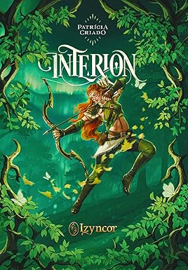

Review da série em destaque na Biblioteca

Interion é uma série de fantasia épica com um mundo rico, personagens poderosos e conflitos morais profundos. Cada volume avança entre intrigas políticas, magia instável e relacionamentos intensos.
fantasia adulta, sagas de mundo compartilhado, heróis relutantes e vilões magnéticos.
Voltar à Biblioteca